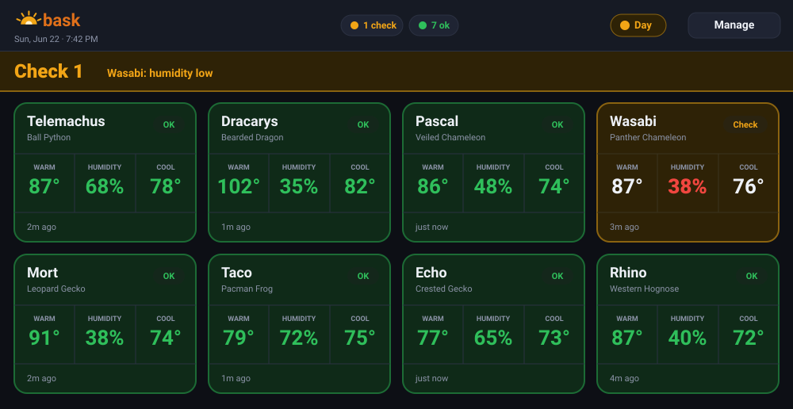
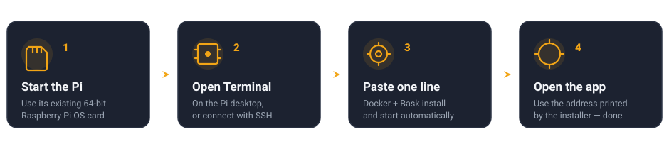

Bask watches the temperature and humidity in every enclosure and shows one simple answer from across the room: a big green “all good,” or a red alert that tells you exactly what’s wrong.

Bask reads the same affordable Govee sensors many keepers already use, and turns them into a calm, at-a-glance wall display.
A giant green “all good,” or a red banner naming the out-of-range enclosure and exactly which reading is off.
Set the right warm-side, cool-side, and humidity targets per species. Ships with sensible starting points for common reptiles.
Different targets for lights-on and lights-off, switched automatically — so a normal night-time drop doesn’t cry wolf.
Reads your Govee sensors over Bluetooth. No pairing dance, no Govee account, no wires across the room.
Warns you before a sensor’s battery dies or drops off — so you’re never blind without knowing it.
Optional phone alerts the moment an enclosure needs attention — even when you’re away from home. Two-minute setup.
Add it to your phone or tablet’s home screen — its own icon, opens fullscreen. No app store needed.
Runs entirely in your home on a tiny computer. Nothing is sent to the cloud. No subscription, ever.
A one-time setup with inexpensive, easy-to-find parts. No soldering, no wiring.
Any supported 64-bit model running Raspberry Pi OS — use the SD card that came with it if it already boots. A Pi 4 is an easy pick; a Zero 2 W is the tiniest.
One small thermo-hygrometer in each enclosure you want to watch. Affordable and widely available.
View it on your phone, a tablet, an old monitor, or a smart display — anything with a web browser on your Wi-Fi.
If your Pi already starts Raspberry Pi OS, keep its SD card. Open Terminal, paste one installer command, and Bask handles Docker, Bluetooth, storage, and automatic startup.

Use the working OS card that came with your Pi, or install Raspberry Pi OS (64-bit) with Raspberry Pi Imager. Connect the Pi to your home network.
Use Terminal directly on the Pi desktop, or enable SSH and connect from another computer. No Linux or Docker knowledge is needed.
The installer prepares Docker and Bluetooth, downloads Bask, and sets it to start automatically on every boot.
On any device on your Wi-Fi, open http://bask.local:8080. Tap ⚙ Manage → Pair by proximity, hold a Govee sensor near the Pi, and assign it to an enclosure. Done!
curl -fsSL https://raw.githubusercontent.com/jlyfshhh/bask/main/get-bask.sh | bash
Run the same command later to update Bask without replacing your settings or sensor history.
Want care schedules too? Choose Haven in the Haven installer to set up Bask + Shed and automatically connect their combined room dashboard.
Yes — completely free and open-source under the MIT license. There’s no account, no subscription, and nothing is sold. If it helps and you’d like to chip in toward the animals’ crickets, there’s an optional tip jar, but it’s never required.
No. Start Raspberry Pi OS, open Terminal, and paste one line. The installer handles Docker, Bluetooth, persistent storage, and automatic startup. The beginner guide explains both the on-screen and remote-SSH routes.
Bask works for any keeper using Govee H5075 sensors. It ships with starting temperature and humidity ranges for several common reptiles, and you can adjust every number to match your species and your room. It’s a monitoring aid, not veterinary advice — always verify against trusted care resources.
Yes. Sensor readings, enclosure settings, and history stay on your own Raspberry Pi. Core monitoring needs no account or cloud. Optional integrations such as ntfy alerts or Cielo room climate contact only the service you choose to connect.
Run the same one-line installer again. It fetches the current code and rebuilds the Bask container without replacing your persistent settings or history. The Settings screen also provides a portable backup download.
Yes. Open it on a cheap wall-mounted tablet, an old phone, a monitor, or a smart display like an Amazon Echo Show — anything with a web browser on your network.